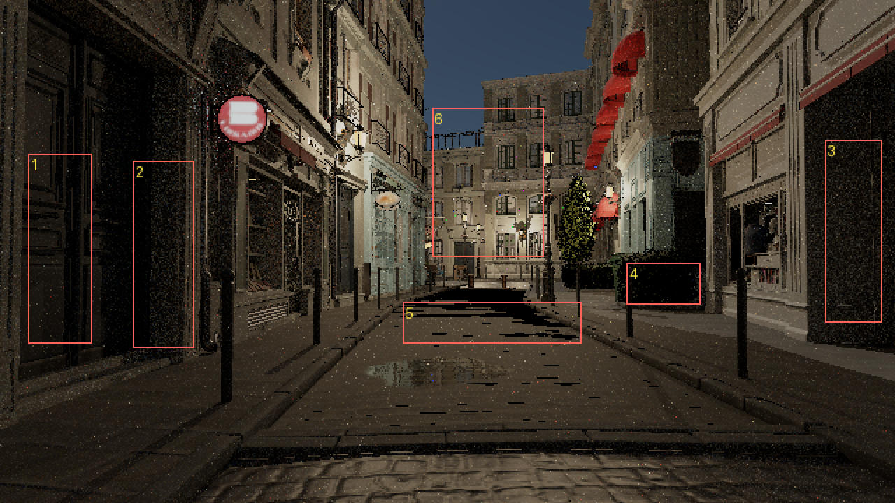
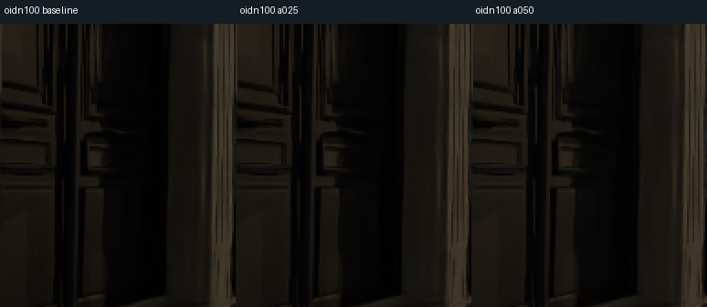
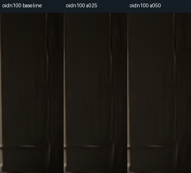
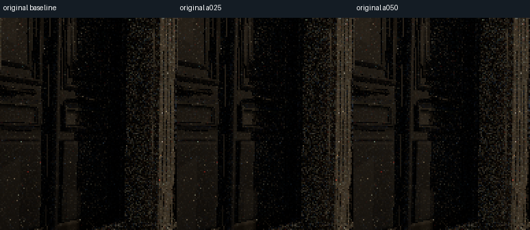
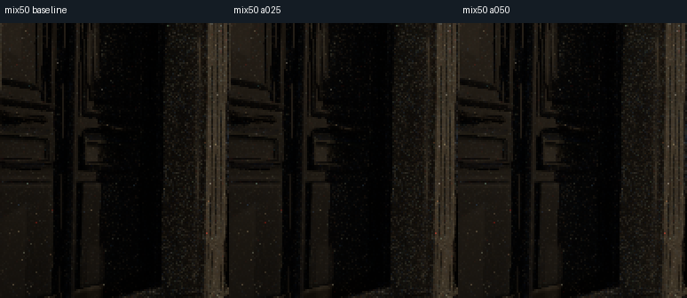
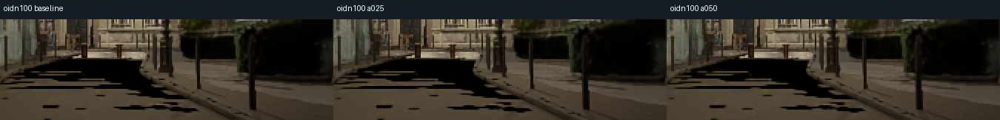

返回统一入口 · 可选预设/结果 · 逐区域HDR诊断 · 同强度对照数据
室外暗部：保留温和可选预设，默认不变
本轮只重映射已保存HDR，没有重新渲染、改变曝光或照明、重跑OIDN，也没有增加滤波。门框与门板层次略更容易辨认；暗部原始颗粒会一起变明显。不能恢复绿篱与路面的零信号。
具体区域先看信号
门板、门洞和右店面大部分有低幅非零信号。wide-C1低段x/(1+x)在这些信号范围接近恒等，没有明显toe压黑。右绿篱和路面阴影的部分黑值则已经在原始线性HDR中为零；仅凭这一单帧，无法区分照明贡献不足与采样/传输原因。
| 实际ROI | 原始线性Y中位 | 原始精确零像素 | 同OIDN100显示中位（0–255） |
|---|
| 左门板 | 2.13e-05 | 20/6075 | 17.56 → 21.49 |
| 左侧深门洞 | 9.65e-06 | 54/5719 | 17.70 → 21.35 |
| 右侧店面凹处 | 2.06e-05 | 21/5200 | 21.42 → 25.10 |
| 右侧绿篱 | 0 | 900/1508 | 1.00 → 1.93 |
| 路面阴影 | 0.000235 | 1066/3683 | 68.54 → 68.54 |
| 受光立面对照 | 0.000337 | 37/8374 | 80.40 → 80.40 |
查看具体ROI位置（1–6对应表格顺序）

选择与取舍
检查了a=.25与.5两档，保留a=.5作为可选预设：门板较清楚，未见明显黑位发灰或偏色，右店面的改善较小。中间调/高光按像素亮度阈值严格保留；受光立面和路面主体中位不变。原始图和50%混合图会显出更多暗噪；OIDN100仍有细节变软的原有限制。
同输入裁切：baseline / a=.25 / a=.5
oidn100_door_comparison.png

oidn100_shop_comparison.png

original_door_comparison.png

mix50_door_comparison.png

oidn100_hedge_road_comparison.png

显示曲线与复用
EV8与wide-C1之后、sRGB之前，以display-linear Y计算：Y<0.04时 RGB乘以 1+0.5(1−Y/0.04)³；其余像素逐位保持原样。RGB=0保持0，在阈值处C²连续，最小导数0.875。三个通道使用同一倍率，不逐通道拉色、不逐图归一化。
& "C:\Users\wcj20\.cache\codex-runtimes\codex-primary-runtime\dependencies\python\python.exe" -B "C:\Users\wcj20\Documents\Codex\2026-10-13\task-2\current_delivery\shadows\export_shadow_preset.py" --input "E:\rurix_quality_runs\20261015_current_delivery\exterior640_static1\preview\oidn100.raw" --out "E:\rurix_quality_runs\shadow_display_replay_NEW"
改用原始scene.raw或已有mix50.raw即可保持对应的降噪强度；必须选新输出目录。所有原HDR仍由原交付保留。
零信号区的下一步
本轮没有确认“物理照明不足”，也未执行新GPU捕获。若继续定位，应固定相机/seed/EV/材质，先核对绿篱与路面ROI的接收面及直接/间接贡献。只有确认有效接收面与天空贡献不足后，才做唯一变量sky_intensity 0.01→0.02的单帧诊断对照，并检查受光立面控制区；不能直接把加倍环境光当作修复。